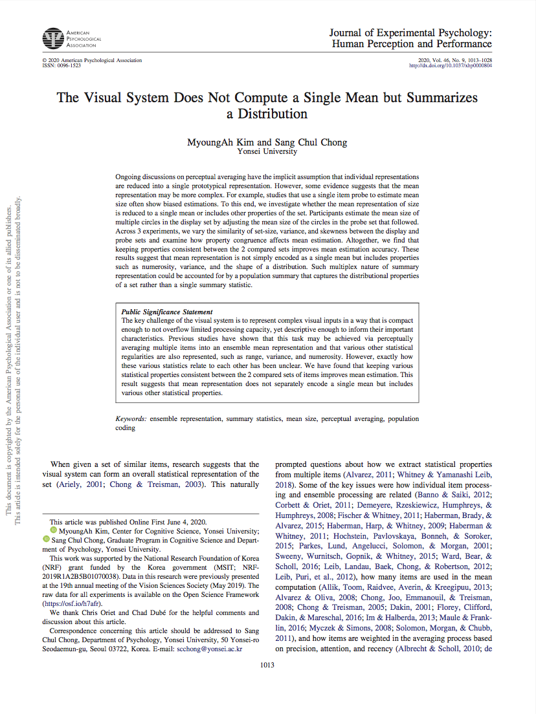

The visual system does not compute a single mean but summarizes a distribution
Journal of Experimental Psychology: Human Perception and Performance 2020
How do humans summarize complex visual information through summary statistics?
 How do humans summarize complex visual information? summary statistics. One way in which the visual system encodes the visual information in the face of its limited capacity is by compressing the complexity via perceptually averaging the regularities. But is the pooled information simply being compressed into a single mean? What is the form of summarized representation and how are various statistical properties incorporated in this summary? Through psychophysical experiments, we have found that keeping set-size, variance, and skewness properties between the two sets of items being compared facilitate accurate mean size perception, while the disparity systematically leads to biases. This suggests that the ensemble is not simply reduced to a single average but embraces more complex set of statistical properties such as numerosity, variance, and the shape of distribution. We believe that ensemble representation may be explained by population coding, in which the visual system summarizes the shape of the distribution of the population response that subsumes mean, variance, range, skewness properties.
How do humans summarize complex visual information? summary statistics. One way in which the visual system encodes the visual information in the face of its limited capacity is by compressing the complexity via perceptually averaging the regularities. But is the pooled information simply being compressed into a single mean? What is the form of summarized representation and how are various statistical properties incorporated in this summary? Through psychophysical experiments, we have found that keeping set-size, variance, and skewness properties between the two sets of items being compared facilitate accurate mean size perception, while the disparity systematically leads to biases. This suggests that the ensemble is not simply reduced to a single average but embraces more complex set of statistical properties such as numerosity, variance, and the shape of distribution. We believe that ensemble representation may be explained by population coding, in which the visual system summarizes the shape of the distribution of the population response that subsumes mean, variance, range, skewness properties.
* Supported by the National Research Foundation of Korea (NRF) grant funded by the Korea government (MSIT), “Efficient encoding of visual information: average and variance.”
Journal of Experimental Psychology: Human Perception and Performance 2020
Poster at Annual Meeting of the Vision Sciences Society (2019)
Talk at Annual Meeting of the Korean Society of Cognitive and Biological Psychology (2019)
Poster at the Annual Meeting of Korean Society of Cognitive Science (2018)
Can we evaluate graphic user interfaces by tracking user’s gaze and brain-signals?
We conducted usability test of a TV streaming app interface using survey, behavioral observation, and examination of viewer’s gaze patterns through eye-tracking (first fixation, saccade length, gaze plot etc.) We evaluated how much the interface focuses or distracts viewer’s attention while browsing, whether it effectively guides attention to the target button, and how it is related to display layout (e.g., degree of crowding between icons).The goal was to evaluate the first impression of TV interfaces by examining viewer’s EEG signals and gaze patterns in their first viewing experience. Based on the selected channels and frequency bands that have the highest correlation with user’s subjective evaluation, we developed a model that can quantify user’s subjective experience of the UI based on EEG signals.
in collaboration with SK Broadband
in collaboration with Samsung Electronics
Case study presented at the HCI Korea Annual Conference (2017)
Other non-vision projects related to HCI, user-experience, interaction design, web development etc
Talk presented at the HCI Korea 2018 Annual Conference (2018)
UX design proposal submitted as part of a class project